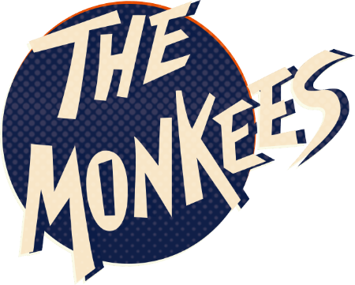

Below you can find an overview of our work to date. You will find our studio albums with their correspondive track listing as wel as mp3's of these tracks. Have a look and have a listen and keep on playing our music! War up with this video to get yourself started!